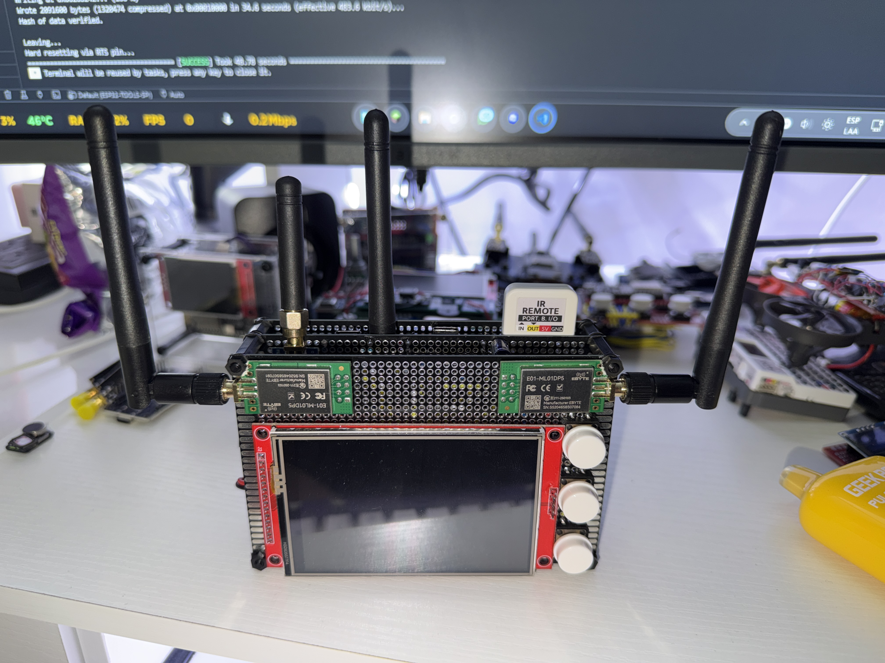
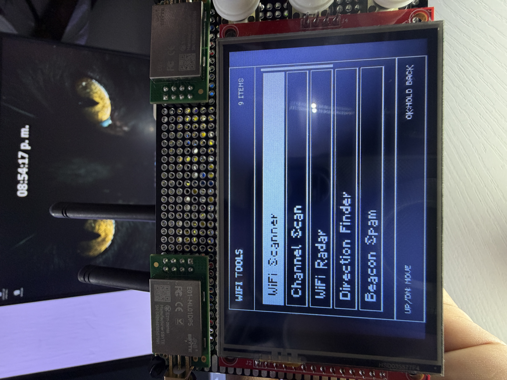
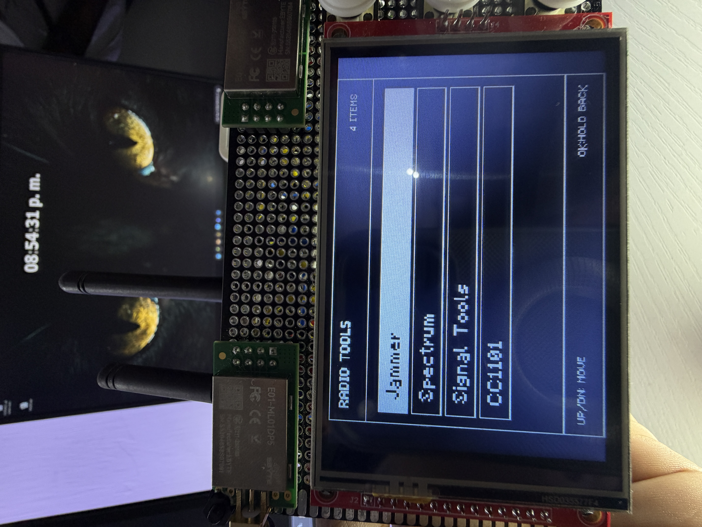
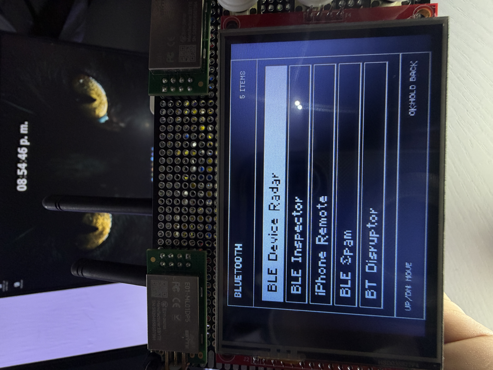
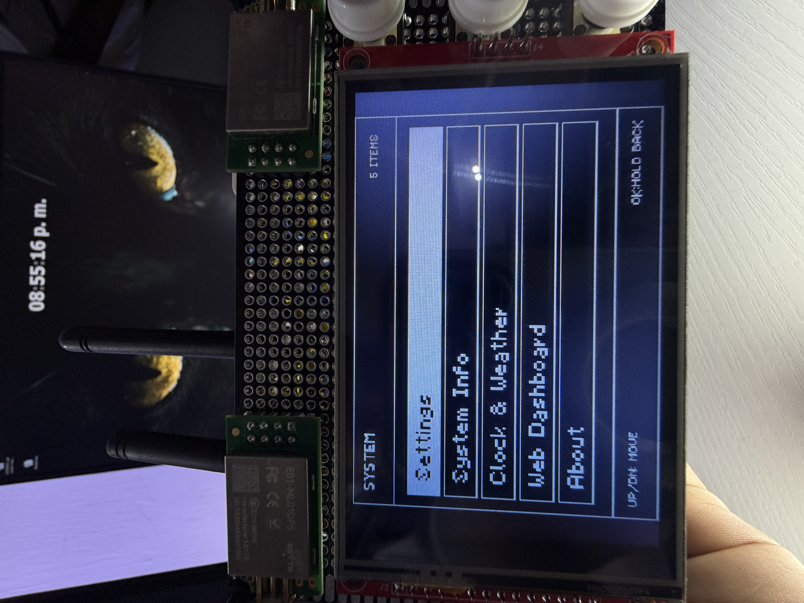
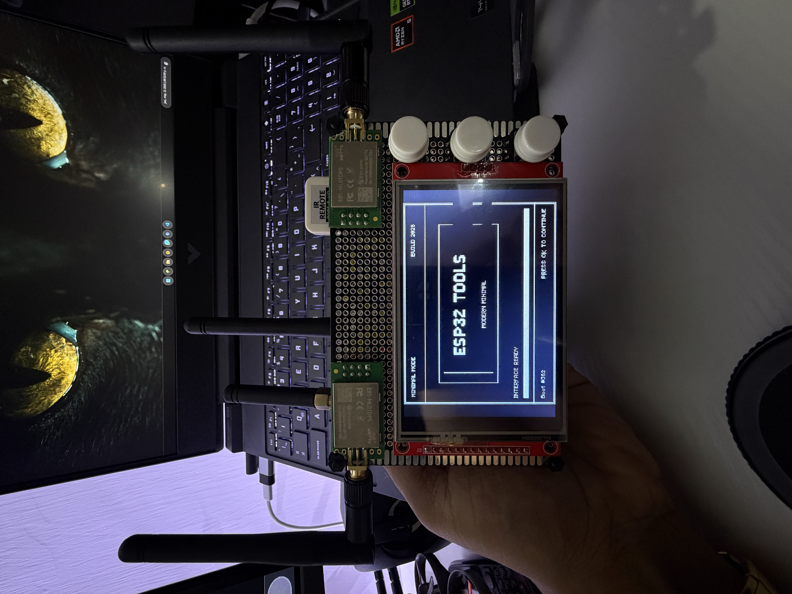

Funciones Clave
WiFi Tools
Scanner, Channel Scan, Radar, Direction Finder, Beacon Spam, Deauther, Evil Portal, Probe Sniffer y KARMA.
IR Tools
Captura, replay, guardado, controles virtuales, analyzer, protocol scan, sniffer y detector IR nocturno.
CC1101
Diag, spectrum, waterfall, frequency monitor, finder, RF analyzer, raw view, live detector y lab replay.
Web Dashboard
AP propio con dashboard para IR guardados, CC1101, WiFi tools y Beacon Spam web lab.
Galeria

Dispositivo final
WiFi Tools
Radio Tools
Bluetooth Tools
System Tools
Splash screenPasos De Flasheo
- Conecta el ESP32 por USB.
- Presiona Instalar firmware y elige el puerto serial correcto.
- Si tu placa lo requiere, manten presionado BOOT al iniciar la carga.
- Espera a que termine y reinicia el ESP32.
Uso Responsable
Este firmware esta pensado para aprendizaje, diagnostico y pruebas en redes o dispositivos propios. Algunas funciones pueden transmitir, interferir o capturar senales si se usan mal.
El usuario es responsable de cumplir las leyes locales y usarlo solo en entornos controlados.